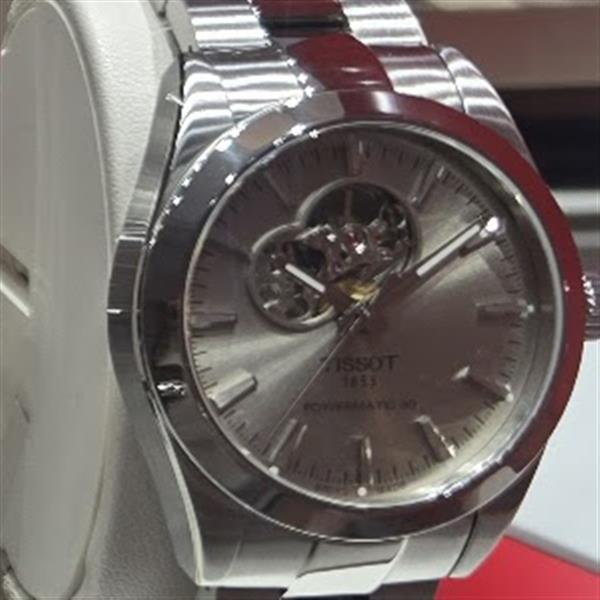

Store sighting · original Lumio photograph
Tissot
Silver open-heart
Photographed by Lumio in store. The silver dial and open-heart detail give this automatic a lighter, more formal character.
Reference
Verification in progress
Price
Added after reference verification
Photo
Original Lumio store photography
